國立臺南大學
戲劇創作與應用學系
王婉容教授

國立臺南大學
文化與自然資源學系
張伯宇副教授

國立臺南大學
戲視覺藝術與設計學系
高實珩教授

國立臺南大學
文化與自然資源學系
王蔡米虹副教授

國立臺南大學
國語文學系
許舜傑助理教授

國立臺南大學
視覺藝術與設計學系
吳鴻滄助理教授
109年8月～110年7月
教師社群經營歷程

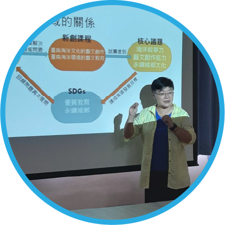
第一次教師會議
－109/09/25－
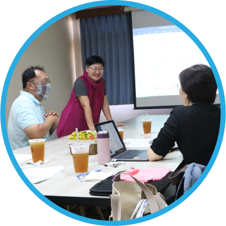
第二次教師會議
－109/10/30－

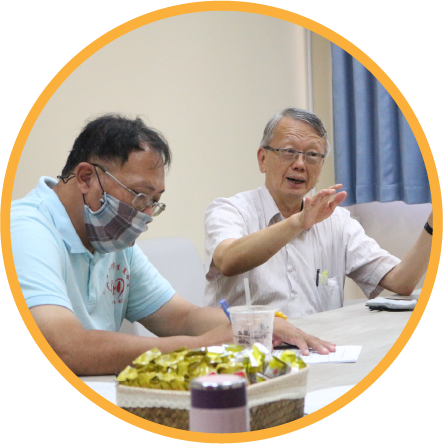
跨領域教學經驗與執行工作坊
－邵揮洲老師－109/10/30－
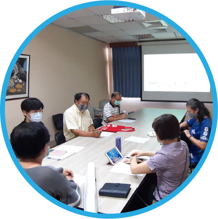
跨領域教學經驗與執行工作坊
－邵揮洲老師－109/10/30－

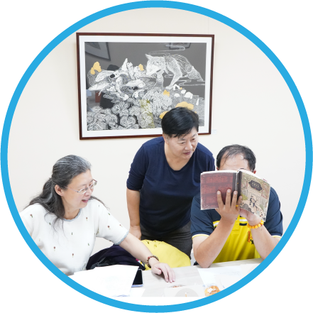
第四次教師會議
－109/12/18－
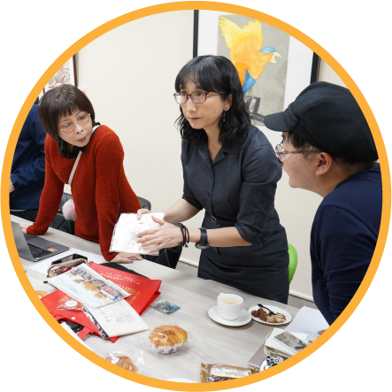
愛河·覆鼎金－溯源奇航
議題導向敘事力計畫案例分享
－陳靜珮老師－109/12/18－

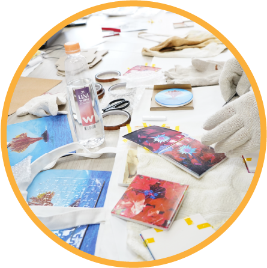
熱轉印機應用實作工作坊
－蔡長明老師－110/01/28－
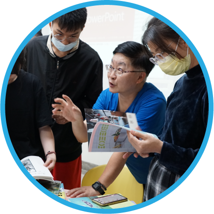
新創課程第一週
－110/02/26－

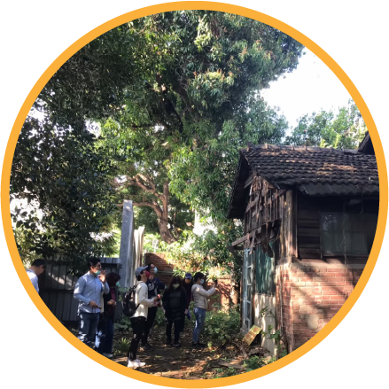
老屋修復與再生工作坊
－徐偉泓老師－110/03/24－
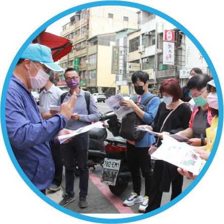
第五次教師會議
－110/04/07－

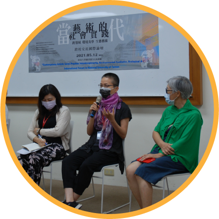
當代藝術的社會實踐
跨校國際交流論壇
視覺藝術與設計學系
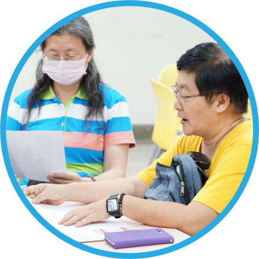
第六次教師會議
－110/05/14－


新創課程最後一週
－110/06/18－
第七次教師會議
－110/06/25－